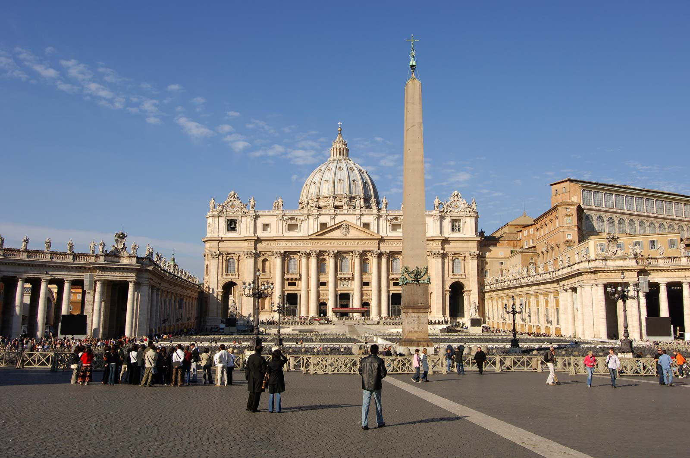

The Colosseum

{kind=link}
The Colosseum, also called Flavian Amphitheatre, giant amphitheatre built in Rome under the Flavian emperors. Construction of the Colosseum was begun sometime between 70 and 72 CE during the reign of Vespasian. It is located just east of the Palatine Hill, on the grounds of what was Nero’s Golden House. The artificial lake that was the centrepiece of that palace complex was drained, and the Colosseum was sited there, a decision that was as much symbolic as it was practical. Vespasian, whose path to the throne had relatively humble beginnings, chose to replace the tyrannical emperor’s private lake with a public amphitheatre that could host tens of thousands of Romans.
The best way to get to the location of The Colosseum is to book a flight in Manila Airport to Rome. This costs roughly around PHP 19,000 - PHP 25,000 with a travel time of 16 hours and 30 minutes. After arriving at Fiumucino Aeroporto, you take train ride to Roma Ostiense. costing roughly around PHP 450 - 550. From there you walk for 5 minutes with a distance of 410 meters to the Piramide. You then take the subway to until Colosseo Station This would take around 4 minutes and costing around PHP 89. From there you walk a distance of 120 meters and then arriving at said destination.
Vatican City
{kind=link}
{kind=link}
Another place to visit in Rome is The Vatican City. The Vatican is the smallest independent state in the world, with an area of less than half a square kilometer, most of it enclosed by the Vatican walls. Inside are the Vatican palace and gardens, St. Peter's Basilica, and St. Peter's Square, an area ruled by the Pope, supreme head of the Roman Catholic Church. This compact space offers a lot of things to see, between its museums and the great basilica itself. Inside St. Peter's Basilica is Michelangelo's masterpiece, Pieta, along with statuary and altars by Bernini and others. The unquestioned highlight of the Vatican museums is the Sistine Chapel, whose magnificent frescoed ceiling is Michelangelo's most famous work. In the Vatican Palace are the Raphael Rooms; the Borgia Apartments; the Vatican Library, and a number of museums that include the Picture Gallery, Museum of Secular Art, Etruscan Museum, and others. The collections you can see in these cover everything from papal coaches to 20th-century art reflecting religious themes.